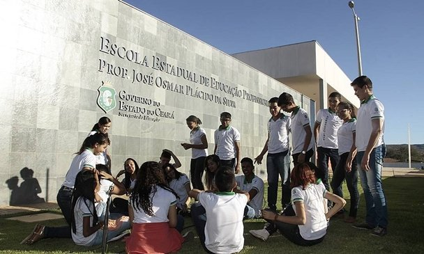
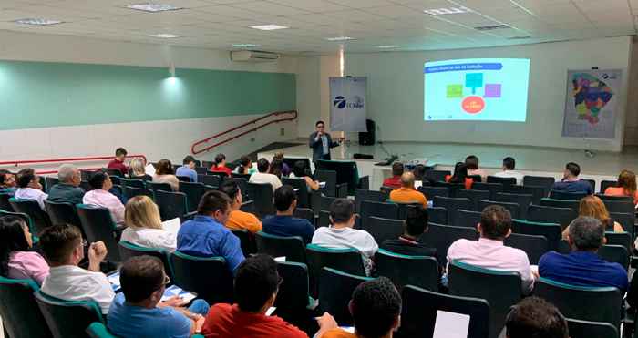
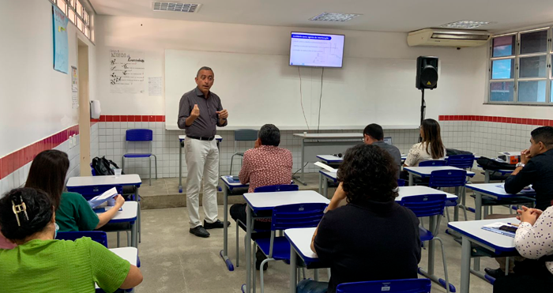

Estágio supervisionado
Na 3ª série, o estágio aproxima os estudantes da rotina profissional em organizações parceiras, com acompanhamento pedagógico.
Ensino médio integrado
Ensino Médio e formação técnica em tempo integral, com aulas práticas, projetos e estágio supervisionado em Barro, Ceará.

A escola
Inaugurada em 2017, a escola homenageia José Osmar Plácido da Silva, professor de matemática da rede pública estadual e educador de referência no município.
A Tecnologia Empresarial Socioeducacional (TESE) orienta o planejamento e o acompanhamento das ações escolares. A formação combina aulas, projetos e práticas profissionais com atividades que estimulam autonomia, cooperação e protagonismo juvenil.
Leia sobre a inauguração

Formação profissional
O edital de ingresso de 2026 confirma os quatro cursos da escola. As grades abaixo seguem os planos estaduais da SEDUC-CE. Cada curso indica o documento e as turmas a que a tabela se refere.
Vida escolar
Na 3ª série, o estágio aproxima os estudantes da rotina profissional em organizações parceiras, com acompanhamento pedagógico.
O grêmio estudantil e a liderança de turma abrem espaço para representar colegas e propor ações para a comunidade escolar.
Feiras de ciências, olimpíadas como a OBMEP e a OBI e jogos interclasses são oportunidades para investigar, criar e trabalhar em equipe.
Seleção
O ingresso na 1ª série é destinado a estudantes que concluíram o Ensino Fundamental até a matrícula. Consulte o edital da edição desejada para confirmar datas, vagas e documentos.
Confira cursos, vagas, critérios e cronograma no canal oficial.
Apresente os documentos nas datas e horários do edital.
A comissão confere a documentação e aplica os critérios de classificação.
Consulte o resultado e compareça à secretaria se for convocado.